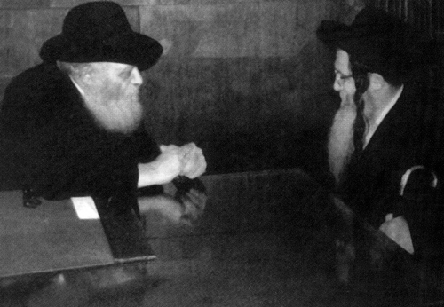

Saving the T’mimim
The Admur, Rabbi Yaakov Yisachar Ber Rosenbaum of Nadvorna zt”l was a good friend of Chabad. He encouraged taking part in the Rebbe’s mivtzaim and fought for the appointment of Rabbi Landau as rav of B’nei Brak.

Nadvorner Chassidim mourned the passing of the Nadvorner Rebbe, Rabbi Yaakov Yisachar Ber Rosenbaum on 7 Adar 5772. He was 82. The Admur zt”l was a leader who developed the Nadvorner Chassidus while simultaneously working on many fronts in the aid of Klal Yisroel.
For many years, the Admur gave of his wisdom to numerous people who flocked to his door without differentiating between his Chassidim, other Chassidim, and those who weren’t Chassidim. He had a warm relationship with all kinds of Jews and many took counsel with him.
SAVING THE T’MIMIM
The Nadvorner Rebbe was born on 23 Nissan 5690/1930 in Siret, Romania. His parents were the Admur, Rabbi Chaim Mordechai Rosenbaum, author of D’var Chaim and Rebbetzin Sima Raizel, daughter of the Admur, Rabbi Eliezer Zev of Kretchnif zt”l.
I discovered an interesting story about him when I edited the book The Partisan about the Chabad Chassid, R’ Zushe Wilyamovsky. It was after World War II and R’ Zushe, together with two friends, R’ Yaakov Peles and R’ Dovid Gershowitz, were yeshiva bachurim. They managed to smuggle across the border of Russia into Romania and arrived in Siret in the Bukovina region on the Russian-Romanian border.
On the edge of the city ran a large river with one side belonging to Romania and the other side to Russia. Many took the risk and crossed the border via this river. This took place at night and the fugitives arrived at a certain desolate area.
The Admur, who was fourteen years old at the time, would go out in the evening with the son of one of the distinguished members of the community in order to seek out Jews who needed help. Despite the danger, he got involved for he knew that it was a desolate area and if a Jew would cross the border he would have no one to turn to for help.
Indeed, when the Lubavitcher bachurim arrived they did not know where to go. They were still walking about and scanning faces of passersby to see if they were Jewish when they suddenly happened upon a youngster (the future Admur) who was looking for fugitives like themselves.
“Based on his first impression, which was later proven to be accurate, the Admur thought they were G-d fearing, refined young men,” the Admur’s aide said later on. “As they spoke, the Admur decided to invite them to his home, despite the great danger this entailed. His father was not in town because he was in Bucharest arranging papers so the family could make aliya. The bachurim accompanied the Admur who brought them to his house and provided them with all their needs.” It was only later on that the bachurim learned that “Berele” was none other than the Nadvorner Rebbe’s son.
The Admur said that as far as he could remember, the three bachurim “were very solid in their ruchnius. As per their request, they ate the Shabbos meals on their own.” The Admur recalled the sweet z’miros they sang.
The bachurim stayed in the Admur’s house for some time while the Admur’s son worked hard on obtaining Romanian citizenship papers for them so they could continue on their way. After receiving their papers, they left for Eretz Yisroel.
A short while later, the Admur’s young son was sent to Yerushalayim to learn in the yeshiva of Rabbi Yosef Tzvi Dushinsky, the Av Beis Din of Yerushalayim. A year later his father moved to Eretz Yisroel and settled in Yaffo where he began rebuilding Nadvorner Chassidus which had lost most of its adherents during the war. He also invested a lot into the chinuch of his only son in the ways of Torah and Chassidus, in addition to training him in the ways of leadership, until he was his father’s right-hand man.
On the Shabbos of the Admur’s aufruf, R’ Yaakov Peles unexpectedly showed up and asked to speak. He told the crowd the story of his rescue by the chassan who devoted himself to their welfare. The Chassidim were excited to hear this firsthand story that they had never heard before.
PARTNER TO THE REBBE’S INYANIM
The D’var Chaim of Nadvorna passed away on 15 Teves 5738/1978, and his son Rabbi Yaakov Yisachar Ber succeeded him. Along with leading Chassidim, he expanded the Chassidus and its mosdos. Kiryat Nadvorna was founded in B’nei Brak and in several places in Eretz Yisroel, with mosdos and shuls opened around the world.
Over the years, the Admur participated in many inyanim that the Rebbe initiated, whether by publicly supporting the Rebbe’s mivtzaim or by participating in Chabad events and speaking warmly about the Rebbe. The Admur attended the Kinus to amend the law of “Who Is A Jew,” and signed on the proclamation of g’dolim regarding the dubious conversions performed in Vienna.
On 14 Iyar 5743/1983 he had yechidus with the Rebbe. At first, the Rebbe’s secretaries and Nadvorna Chassidim were in the room. During this part of the yechidus, the subject was the special quality of Pesach Sheini over Pesach in that chametz and matza are allowed in one’s home. Then other topics regarding halacha and minhag were discussed.
At the conclusion of this part of the conversation, the Rebbe asked those present to leave the room and he spoke privately with the Nadvorner Rebbe.
WITH CHABAD IN B’NEI BRAK
After the passing of Rabbi Yaakov Landau, rav of B’nei Brak, there were people who opposed the appointment of his son R’ Moshe Yehuda Leib as his successor, because he is a Lubavitcher Chassid. All Chassidim of B’nei Brak, led by Chabad, fought for his appointment. When the attempt to block his appointment was unsuccessful, the opposition established a separate kashrus organization which impinged on Rabbi Landau’s kashrus organization. The Nadvorner Rebbe was one of the leading proponents of R’ Landau’s rabbanus. When the opposing kashrus organization was founded, he announced that he would only allow food with R’ Landau’s hechsher into his mosdos.
Over the years, he regularly attended Chabad events that took place in B’nei Brak as well as simchas in the Landau family.
The Nadvorner Rebbe was especially fond of Yeshivas Tomchei T’mimim in B’nei Brak which, for several years, was located in the Nadvorner building. The Admur attended events that took place in the yeshiva, the Chanukas Ha’bayis and the Hachnasas Seifer Torah celebration. He often offered words of encouragement to the menahel of the yeshiva, Rabbi Shlomo Rosenberg a”h and the present day menahalim of the yeshiva, the brothers R’ Levi and Shmuel Rosenberg.
Those associated with the yeshiva, which was in close proximity to the Admur’s home for years, related after his passing how impressive it was to see the long lines of people waiting to see him. Among those waiting were people from all walks of life who sought his advice and bracha. The Admur was known for his wisdom and counsel particularly in the areas of parnasa and medicine.
TZ’DAKA AFTER HIS PASSING
The Admur became seriously ill two years ago and never recovered. He suffered greatly, but his mind and heart were still devoted to Klal Yisroel. A few weeks before his passing he even wrote a detailed will in which he said that large sums of money should be given to tz’daka after his passing. During his illness, he asked that Chassidim not discuss his illness but continue living life as usual. He only agreed to prayers said on his behalf.
Despite his illness he tried to make himself available to his Chassidim. Four days before his passing he attended the wedding of his granddaughter.
He asked that his oldest son, R’ Eliezer Zev succeed him as Admur and nasi of the mosdos in Eretz Yisroel while his other sons lead Nadvorna k’hillos in their cities.
Among those who went to console the new Admur and his brothers was R’ Gavriel Gordon, shliach in Kiev. R’ Gavriel was in touch with the departed Admur and his son regarding the preservation of the burial places of their ancestors in the Ukraine. The new Admur received him warmly.
R’ Gordon related that before he married, the departed Admur asked him whether he planned on continuing his shlichus in Kiev. When he said it depended on his kalla’s decision the Admur said, “You should discuss it with her before the wedding and get her to agree to live in Kiev. Kiev cannot remain without a shliach of the Rebbe.” He also gave the shliach a bracha for success and often helped him to the best of his ability.
Shneur Zalman Berger. "Saving the T’mimim." Beis Moshiach, no. 833 (May 8, 2012).